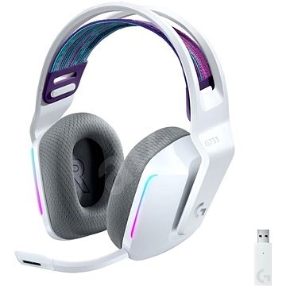
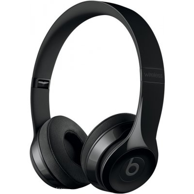
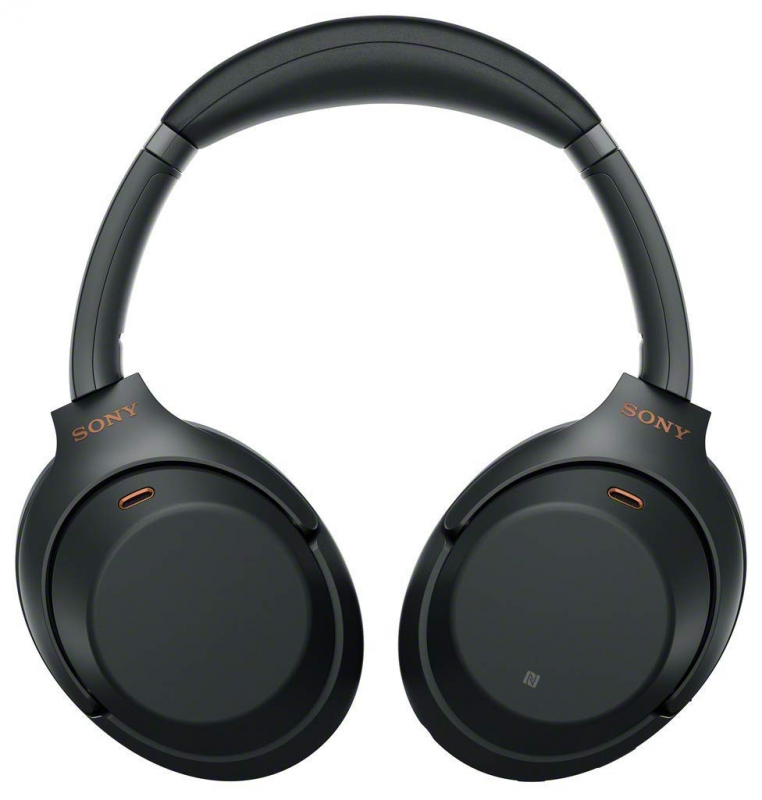
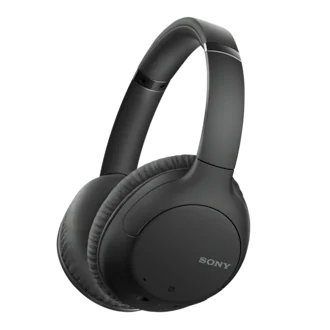

Cena s dph: 149€

Herné slúchadlá bezdrôtové, s mikrofónom, cez hlavu, okolo uší,
uzatvorená konštrukcia, Bluetooth, Bluetooth s donglom, pre PC,
PlayStation 4 a PlayStation 5, s ovládaním hlasitosti, prijímanie hovorov,
prepínanie skladieb, frekvenčný rozsah 20 Hz–20000 Hz, citlivosť 87,5 dB/mW,
impedancia 39 Ohm, menič 40 mm, výdrž batérie až 29 h
Beats Solo3 Wireless Headphones
Cena s dph: 189€

Digitálny fotoaparát – bezzrkadlovka, Full Frame, CMOS Exmor
24.2Mpx, bajonet Sony E, Eye Auto Focus, 3" výklopný dotykový
displej, 4K video, SD/SDHC/SDXC+microSD/SDHC/SDXC+MS
PRO, elektronický hľadáčik, WiFi, NFC, HDMI, USB, sekvenčné
snímanie 10sn./s+objektiv 28–70mm f/3.5–5.6, stabilizácia.
Sony Hi-Res WH-1000XM3, platinovo strieborné
Cena s dph: 269,99€

Bezdrôtové slúchadlá s mikrofónom, cez hlavu, okolo uší,
uzatvorená konštrukcia, Bluetooth, aktívne potlačenie hluku (ANC),
hlasový asistent, frekvenčný rozsah 4Hz–40000Hz, citlivosť 104,5 dB/mW,
impedancia 47 Ohm, menič 40mm, výdrž batérie až 38h
Sony Noise Cancelling WH-CH710N
Cena s dph: 97,90€

Bezdrôtové slúchadlá s mikrofónom, cez hlavu, na uši, uzatvorená konštrukcia,
Bluetooth, NFC, aktívne potlačenie hluku (ANC), prijímanie hovorov, prepínanie skladieb,
hlasový asistent, frekvenčný rozsah 7Hz–20000Hz, impedancia 72 Ohm, menič 30mm,
odnímateľný kábel 1.2m, výdrž batérie až 35h